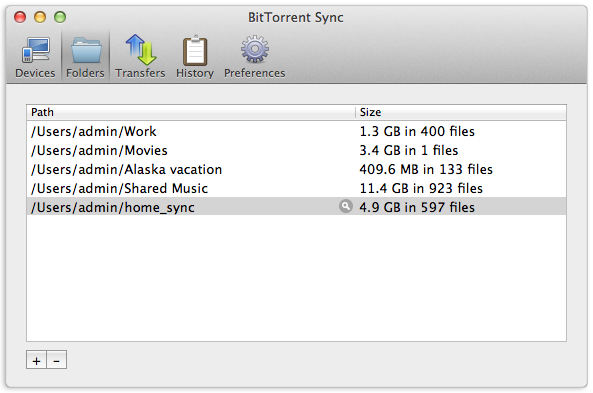
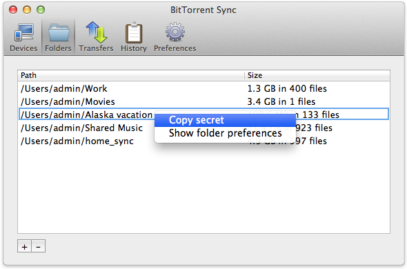
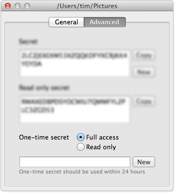
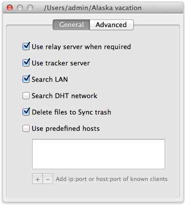

Getting Started
- Install BitTorrent Sync on the devices you want to sync.
- Choose a folder that you want to synchronize and generate a secret for that folder on one of the devices. The secret is random and unique, and functions like a key that connects multiple devices into one sync network.
- On the other devices, choose a folder to sync and enter the same secret.
- Leave BitTorrent Sync running on all devices you want to keep in sync
- Manage your sync folders at any time via the application interface on Windows and Mac, or via the WebUI and config file on Linux.
Choosing Folders
BitTorrent Sync allows you to synchronize any number of folders and files of any size.
To add a new folder to Sync, at the bottom of the Folders tab, click on the ‘+’ button (Mac) or “Add” button (Windows). Choose any folder on your computer or external drive (note that you need to have proper permissions to modify the folder).
If the folder doesn’t exist, you can create a new folder anywhere on your computer.
Generating/Using a Secret
Folders that sync are connected by a common secret--a private key that is unique for every sync folder.
To initiate a sync network, click Generate to create a new secret. This secret must be then entered on all the devices you want to sync. If you are joining a sync network, enter an existing secret that someone has shared with you.
If you need to find the secret later on, it can be found by right-clicking on the folder in the Folders tab, and copying it to the clipboard, or looking on the advanced tab in folder preferences.
One-Way Synchronization
If you want to sync information from your computer only (and not the other way round), you can do it using a read-only secret. For example, you might want to use a read only secret to share a folder full of photos and videos with your family. This way, you are the only person who can add or remove things from the folder.
The read-only secret can be found by right-clicking on the folder in the Folders tab, opening folder preferences, and clicking on the Advanced tab.
Any device setup using the read-only key will be fully synced, but no changes will ever be copied back to the original device. You can use the read-only secret in combination with the master secret depending on what type of access you are willing to grant to other devices. Devices with read-only secrets cannot generate their own secrets for a folder.
One-Time Secret
For security reasons, you may not want to share a master secret. In this case you can create a one-time key that can be used only once and expires after 24 hours. This can either be a full access or a read-only key that is created on the base of the master secret. After the one-time secret is entered, the device will receive a permanent full access or read-only secret for the sync network.
Application Preferences
You can set your preferences for the application in the Preferences tab in the main window.
Here you can change the name of your computer as it is shown on other devices, configure updates and notifications, change the listening port and map it using UPnP. You can also set limits for your upload and download speeds.
This tab also allows access to advanced application preferences. Note that they are intended only for expert users and you modify them at your own risk. Information about the advanced preferences is available in our User Guide.
Folder Preferences
Apart from changing settings for the whole application, BitTorrent Sync lets you fine-tune preferences for each folder. They can be accessed by double- or right-clicking on a folder in the Folders tab.
General Tab
BitTorrent Sync is preconfigured to ensure the best performance, but feel free to change settings according to your needs:
- The relay server is used only when it is impossible to connect to other devices directly due to NAT issues.
- The tracker server facilitates communication and discovery between devices.
- ‘Delete Files to Sync trash’ saves all the files deleted on other clients to a hidden ‘.SyncTrash’ folder. If you uncheck this option, deleted files will be moved to system Trash\Recycle Bin (depending on your OS).
- ‘Use predefined hosts’ is an option to specify ip:port or host:port of known clients. This way, if one of your devices has a static and accessible IP, peers can connect to it directly.
Advanced Tab
Advanced folder preferences is the place where you can copy, change or generate new secrets for your sync folder.
- Secret is a 32-character master key for connecting folders. All the folders added with this secret will be granted a full set of permissions for two-way synchronization. The master secret can be changed at any time or replaced with a custom Base64 string more than 40 symbols long (any change to the folder secret needs to be re-entered on all the devices in the sync network).
- Read only secret is generated on the basis of the master secret and is used for one-way synchronization. Any folder with the read-only secret will be fully synced, but changes made in the folder will never be synced back to the original device. It is also not possible to manage secrets for the folder if access to the folder is granted by a read-only secret.
- One-time secret is a security option available for the folders operated by a master secret. You can generate either a full access or read only short key (16 characters) which can be used only once and should be activated within a limited period of 24 hours. When connected, a folder added with a one-time secret will receive a permanent master or read-only secret from the device where the one-time secret was generated.
Linux and NAS
WebUI
WebUI is the default way of accessing BitTorrent Sync. It can be reached at YourLocalIP:8888/gui
You can manage both general and folder preferences via WebUI the same way as from a desktop application.
Config File
Config file offers a slightly wider variety of options to configure. It is a JSON format file.

Setting preferences using the config file:
- Get a sample config by running --dump-sample-config. You’ll see a list of options and commentary.
- Save config file to any desired location. For example, to save it to the current directory, run: ./BitTorrent Sync --dump-sample-config > sync.conf
- Customize the settings and run BitTorrent Sync with the modified config. For example, if your config file is in the same directory with BitTorrent Sync, run: ./BitTorrent Sync --config sync.conf
Before running BitTorrent Sync with the config file, make sure it is a valid JSON. Otherwise, you’ll get an error message.
BitTorrent Sync offers a lot of configuration options to make sure you achieve what you need. The default Sync settings are based on our extensive experience in networking and P2P networking and are the most suitable for most users..
FAQ
If you have additional questions or comments about BitTorrent Sync, please visit the BitTorrent Sync forum.